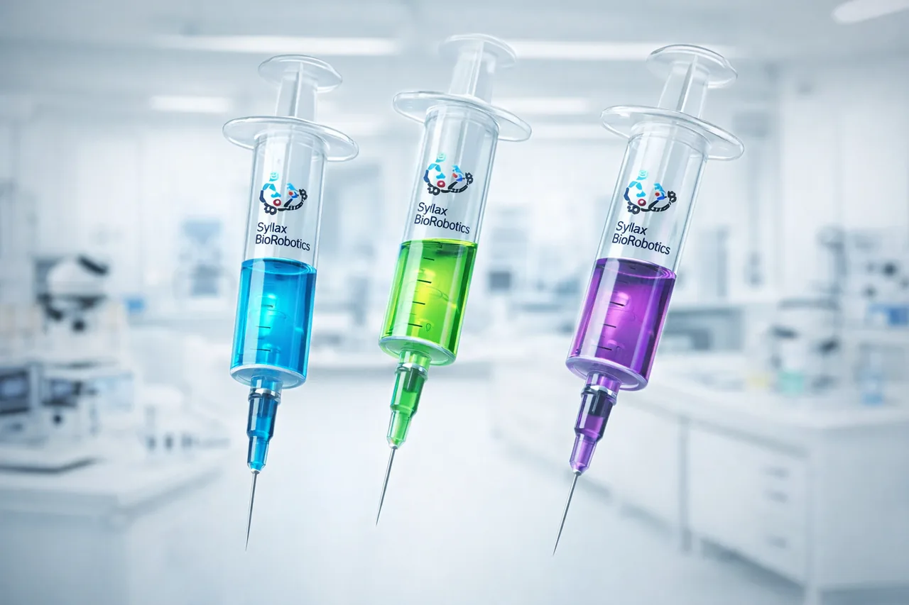
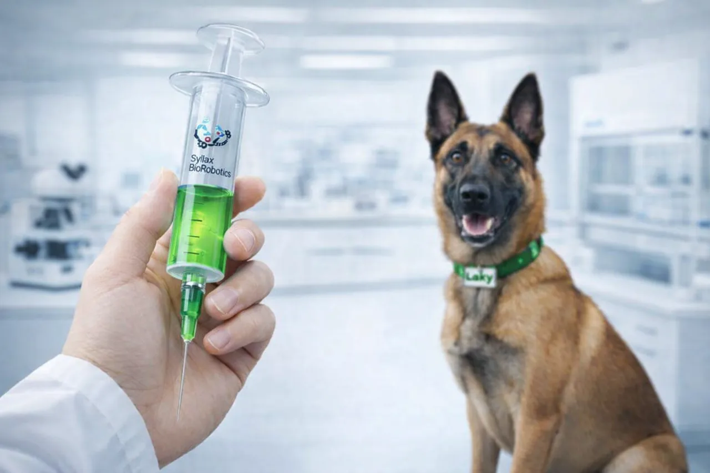
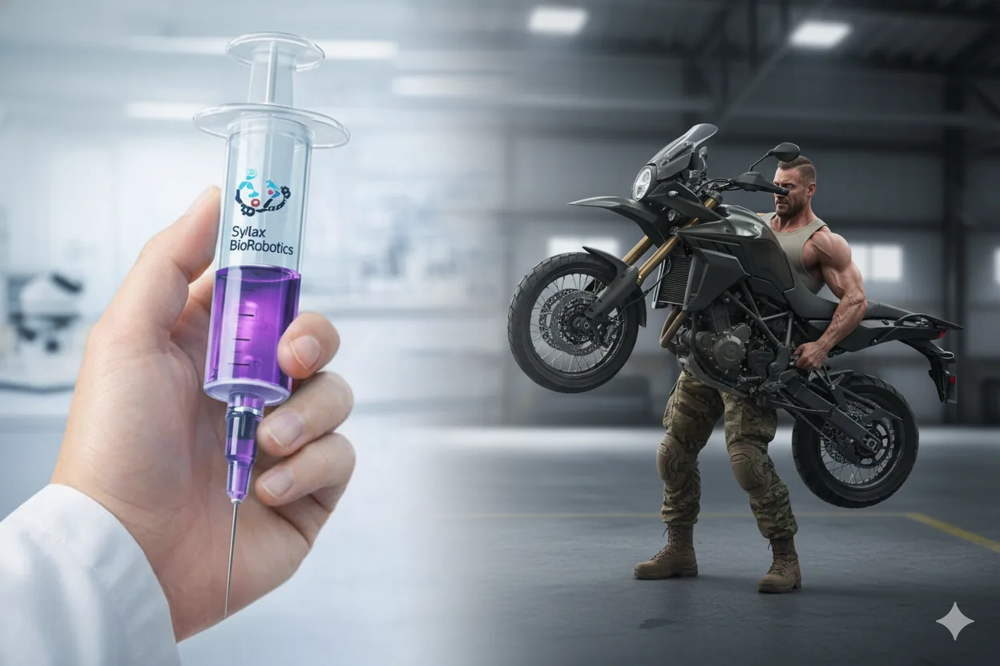

Protocolos de Ingeniería Bio-Robótica

Catálogo de Compuestos Activos
Sylax-C: Serie Civil
Compuesto base para regeneración celular.
Sylax-A: Serie Animal
Agente de bio-adaptación sensorial.
Sylax-M: Serie Militar
Fluido de integración sintética.
Nanotecnología y Compuestos Sintéticos
Investigamos la integración de nanorobots diseñados para operar a escala molecular junto con compuestos bioactivos.
Sylax-C: Protocolo de Regeneración Civil
El estándar de oro en optimización biológica. Sylax-C no modifica la esencia, restaura el potencial.
- Longevidad: Extensión de la vitalidad celular.
- Inmunidad: Respuesta sistémica avanzada.
- Integridad Ósea: Densidad y salud estructural.
- Vitalidad: Regulación endocrina y libido.
- Línea Germinal: Optimización de herencia.

Sylax-A: Protocolo de Bio-Adaptación
Potenciación integral diseñada para fauna auxiliar de alto rendimiento. Optimización biológica para entornos de campo exigentes.
- Optimización Biocinética: Mejora de fuerza y tracción.
- Agudización Sensorial: Percepción expandida.
- Resiliencia Inmune: Recuperación acelerada.
- Desarrollo Cognitivo: Capacidad de respuesta.
- Extensión Vital: Ciclos de vida optimizados.

Sylax-M: Integración Sintética Táctica
La cima de la bioingeniería. El M999U no solo mejora la biología, la rediseña para el despliegue táctico de alto nivel. Sincronización total entre el sistema nervioso y el entorno sintético.
- Optimización Cinética: Fuerza y velocidad sobrehumana.
- Estructura Esquelética: Re-articulación y expansión ósea.
- Enlace BCI: Control neuronal directo.
- Gestión de Nanobots: Control interno sistémico.
- Adaptación Cognitiva: Procesamiento de datos en tiempo real.